- Object ID: 00000018WIA30C3D230GYZ
- Topic ID: id_2009941 Version: 2.6
- Date: Apr 17, 2024 6:05:34 AM
Replacing the cradle home sensor and home sensor mechanism collector
Prerequisites
| Required conditions |
|---|
| The table is at up-most position. |
Replacing the cradle home sensor and home sensor mechanism collector (5445684)
Procedure
- Remove the right panel screws and remove the right panel to access to the home sensor.
Figure 1. Remove the right panel screws and the right panel 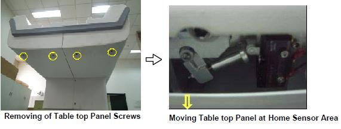
- Disconnect the limit switch connection cable carefully.
Figure 2. Disconnecting Home Sensor Limit switch cable 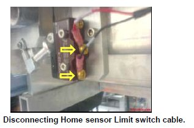
- Remove the limit switch mounting screws, then the limit switch.
Figure 3. Remove the Limit switch 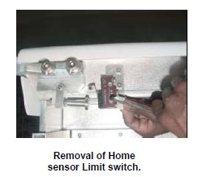
- Remove the lock nut of the push rod, and then remove the push rod.
Figure 4. Remove the push rod 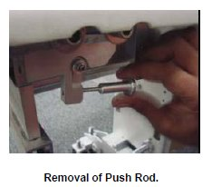
- Remove the limit switch dog nut, and then remove the washer and limit switch dog.
Figure 5. Remove Limit switch Dog 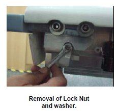
- Remove the limit switch dog and the spring from the table top.
Figure 6. Remove the limit switch dog and the spring 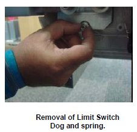
- Remove the sensor pin, circlip and the flange bush from the other side of the tabletop.
Figure 7. Remove the sensor sin, circlip and the flange bush 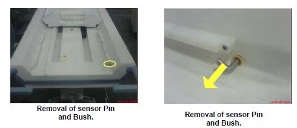
- Now take the parts from the new home sensor kit, assemble the sensor rod in to the bush, and insert the circlip to sensor rod.
Figure 8. Assemble the sensor rod in to the bush 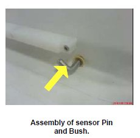
- Take the spring from the kit; ensure that the lengths of the legs are cut as per drawing. If not, cut it to the drawing size.
Figure 9. Spring 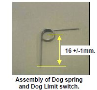
- Insert the spring into the limit switch dog, assemble to the sensor rod on the other side of the table top.
Figure 10. Insert the spring into the limit switch dog 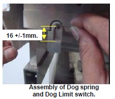
- Fix the washer and lock nut to the sensor pin locking the switch dog. Ensure spring action of the switch dog by actuating it.
Figure 11. Fix limit switch dock lock nut 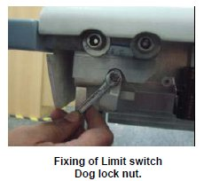
- Fix the push rod and the lock nut of the push rod to the dog switch.
Figure 12. Fix the push rod 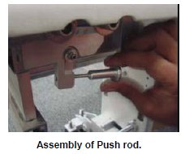
- Fix the limit switch with the help of mounting screws.
Figure 13. Fix the limit switch 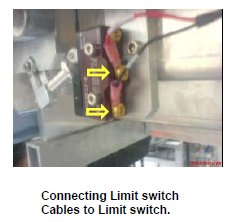
Replacing the home sensor and home sensor mechanism collector (8311111)
Procedure
- Remove the right panel screws, then remove the right panel to access to the home sensor.
Figure 14. Remove the right panel screws and the right panel 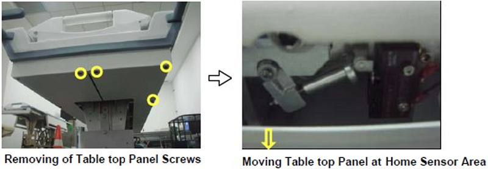
- Push the cradle towards the magnet side to access cradle stopper. Remove cradle stopper along with shims and bumper by removing screws.
Figure 15. Removing the cradle stopper along with shims and bumper 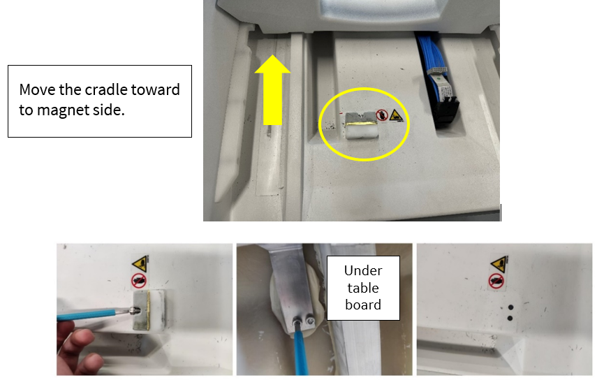
- Open all fixers of cable that connect with home sensor.
Figure 16. Open all fixers 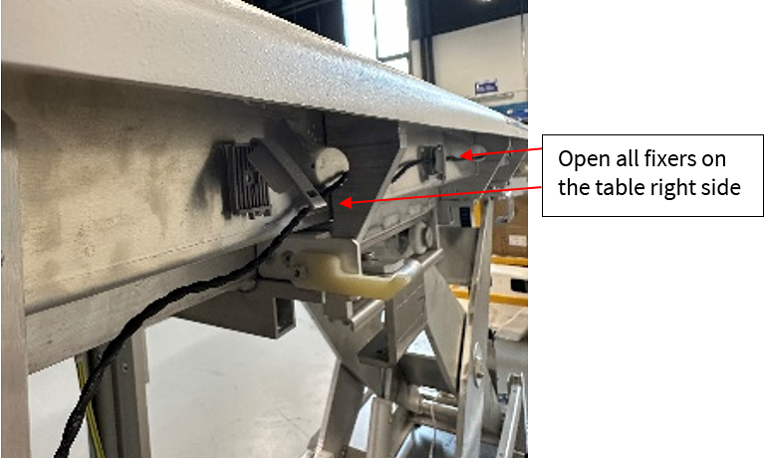
- Remove the home switch mounting screws, then removed home switch from original sheet metal.
Figure 17. Removing mounting screws 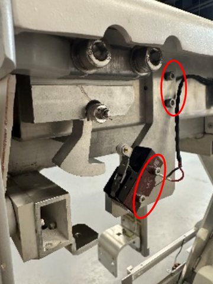
- Remove the limit switch dog nut, and then remove the washer and limit switch dog along with the spring.
Figure 18. Removing the limit switch dog, spacer, nut and spring 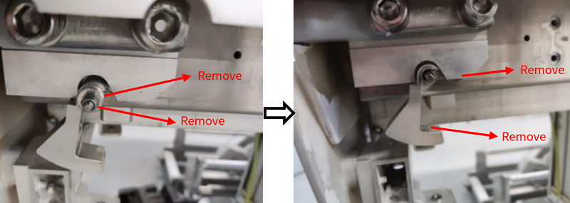
- Remove the sensor pin, circlip, and the flange bush from the other side of the table top.
Figure 19. Removal of sensor Pin and Bush - Take the parts from the new LHFT HOME SENSOR collector (8311111), assemble PIN (8311134) into the bush (5331025), and insert the circlip (8311135) to sensor rod. Then put them into the hole. Note Adjust to ensure that the flat edge of the bush and the opening direction of the clipper are consistent and fit the inside edge of the table board.
Figure 20. Assemble the Sensor rod into the Bush and installing clipper 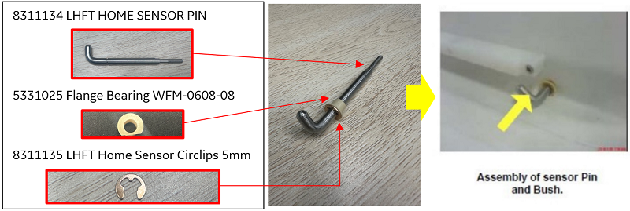
- Insert the new limit switch dog (8311131) to the sensor pin, then insert the spring (8311137) from the collector into the limit switch dog.
Figure 21. Insert the new limit switch dog and the spring 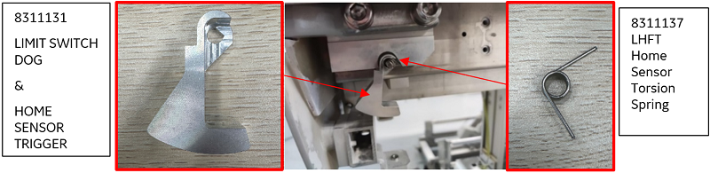
- Fix the washer and lock nut to the sensor pin locking the switch dog. Ensure spring action of the switch dog by actuating it.
Figure 22. Fix Limit switch dock lock with spacer and nut 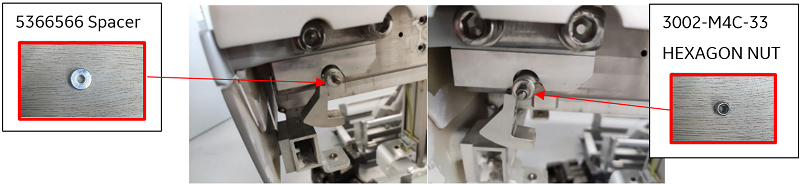
- Install the home sensor by tightening the mounting screws to the sensor mount (8311130).
Figure 23. Installing LHFT Home sensor mount 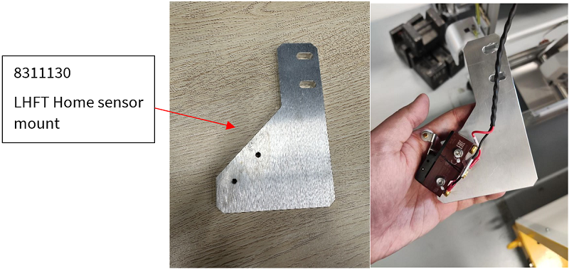
- Install new home sensor mount from collector at standard middle position. Do not tighten the screws too tight, may need to adjust the position later).
Figure 24. Installing new home sensor mount 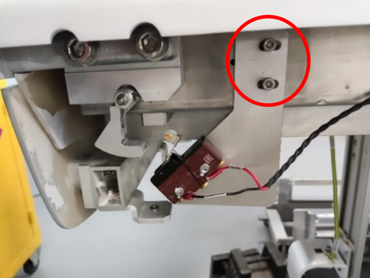
- Install new cradle stopper (8311133), the side without chamfer is directed toward the magnet.
Figure 25. Installing new cradle stopper 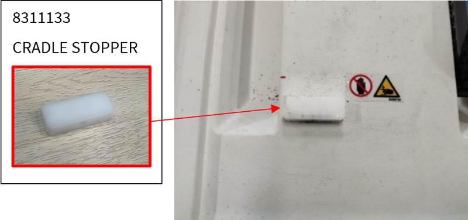
- Install 2 new shims and new bumper to cradle stopper by tightening the screws.Note New shim is thicker than before, new bumper is harder than before.Note Tighten the screw on bumper until it’s fixed, do not over tighten.
Figure 26. Installing new shims 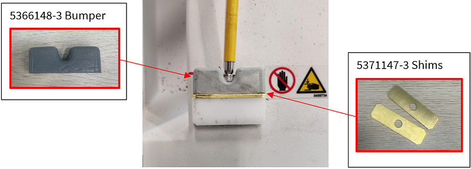
- Verify whether side latch will cause scratch, if not, go to next step; if yes, adjust side bar vertically to ensure gap between cradle and side bar.
- Loose screws to adjust side bars vertically, tighten after adjustment.
- Push cradle back to home position, check gap between cradle and side bar, ensure no scratch when cradle goes.
Figure 27. Verify whether side latch will cause scratch 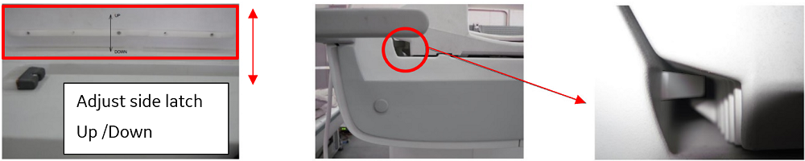
- Pull the cradle back to cradle stop, then push the cradle forward to magnet side, confirm whether it can be locked by the side latch.
Figure 28. Hard stop 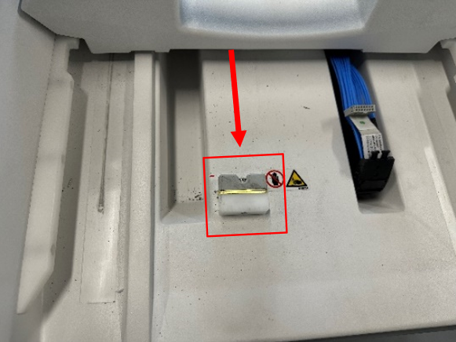
Note This step is to measure the shaking distance of cradle hard stop to side latch If the cradle can be locked by the side latch, keep pushing the cradle towards the cradle hard stop, place a position measurement sticker (8311142-1) between cradle and tabletop (rear table side).Note Place the sticker parallel to the end of the table.Figure 29. Pushing the cradle and placing the sticker 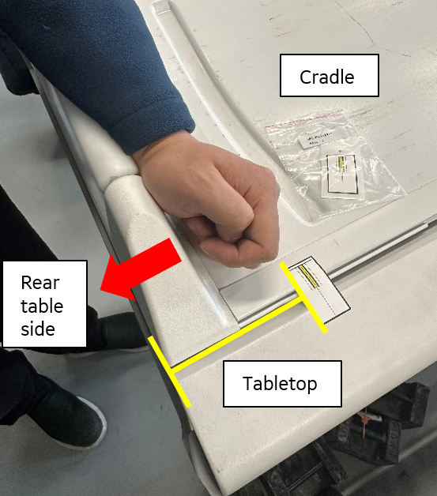
Use finger push the middle of the sticker to cut the sticker between cradle and tabletop.Figure 30. Cut the sticker 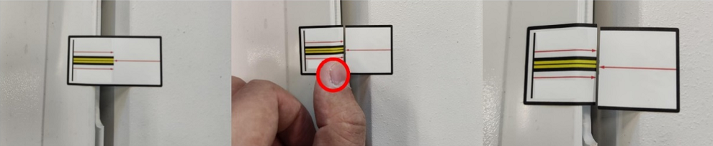
Move the cradle towards to magnet side until it locked by side latch, measure the distance between position measurement stickers, follow Usage of sticker to adjust the number of shims (back to step), double check the cradle can be locked by side latch.Note The number of shims in the figure below defaults is 2 shims.Figure 31. Usage of sticker 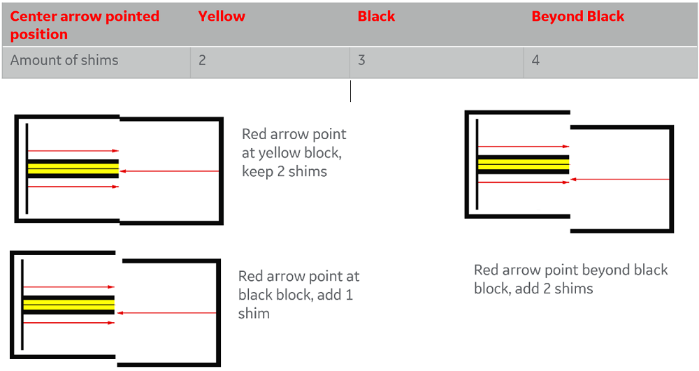
Note If the cradle cannot be locked by the side latch, remove one shim, and repeat this step, if no more shims can be removed, adjust the side latch horizontally.After the cradle can be locked, go to Step 17, and remove the sticker. - Keep pressing the button (on cradle magnet end) to release cradle from side latch, then push the table away toward the magnet side for more than 20cm, make sure the home sensor is released.
Figure 32. Keep pressing the Button to move cradle to magnet side > 20cm 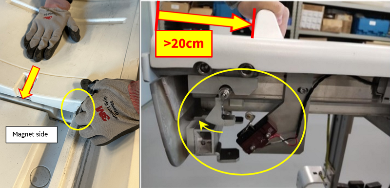
Then pull the cradle back until it hit the bumper, make sure home sensor is triggered (a click sounds) then push the cradle to let it lock by side latch, make sure the home sensor is still triggered (no longer click sound).Note If the home sensor requests failed, adjust the sensor mount (see Step 11) until home sensor can be triggered/released (a click sounds) as requested.Figure 33. Checking the home sensor position 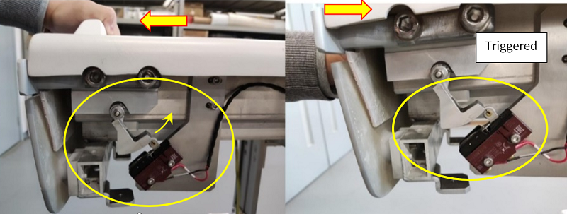
- Make sure the cradle back to its rear end, home sensor is triggered and then push the cradle to check it locked by the side latch.
- Stick the same type of sticker (8311142-1) between cradle and Tabletop near the magnet side.Note Place the sticker parallel to the magnet end of the table.
- Then cut the middle of sticker and release the cradle from side latch (by keep pressing and holding the button on the magnet end of the cradle see Press the button on the end of cradle & move the cradle to reach the middle red line, then move the cradle forward until red arrows reached red line (which means move 4mm).
- Check during the movement whether the click sound happens (home sensor released), if heard the click sound, finish the process, if not, adjust the position of the sensor mount (Step 11) and go back to Step 16.
Figure 34. Use the sticker to calibrate the cradle position 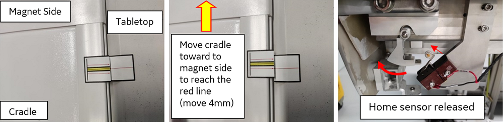
Figure 35. Press the button on the end of cradle & move the cradle to reach the middle red line 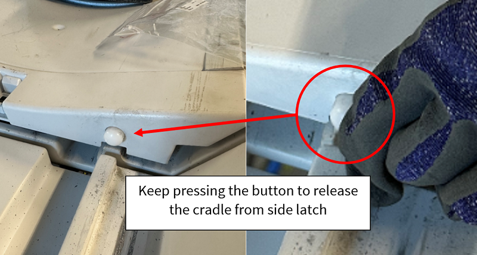
After the cradle can be locked, remove the sticker.
- Stick the same type of sticker (8311142-1) between cradle and Tabletop near the magnet side.
- Put the home sensor cable back into the fixer and close all the fixer. Note If you find that the wires are not long enough for all the fixers to fix them, loosen the one or two closest fixers to the home sensor.
Figure 36. Fix the cable of home sensor 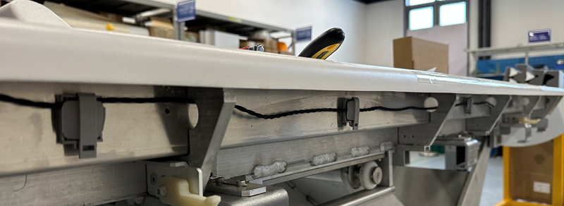
- Fix back the Bottom panels by properly inserting the Side and Rear bumpers to Panel and FRP.
Figure 37. Fix back the Bottom panels 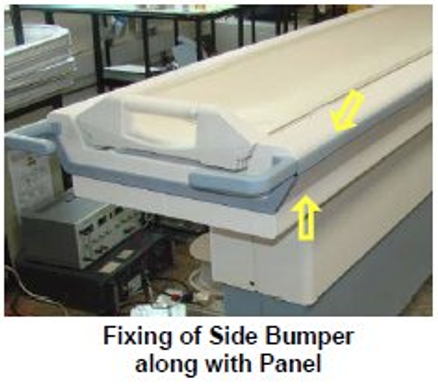
- Tighten the screws of the Tabletop panels.
Figure 38. Tighten the screws 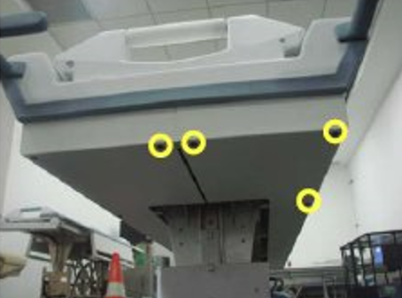